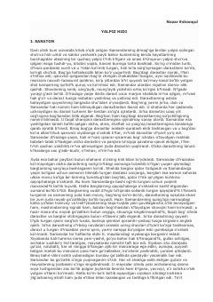

YHInsonning bolalik xotiralari va tabiat bilan ruhiy bog'liqligi haqidagi ta'sirli qissa.
Asarda bosh qahramon Samandarning xotiralari va atrof-muhit bilan bo'lgan ruhiy bog'liqligi tasvirlanadi. Yalpiz hidi qahramonning bolalik xotiralarini uyg'otib, shahar muhiti va tabiat qo'ynidagi qishloq manzaralari o'rtasidagi farqni ochib beradi.